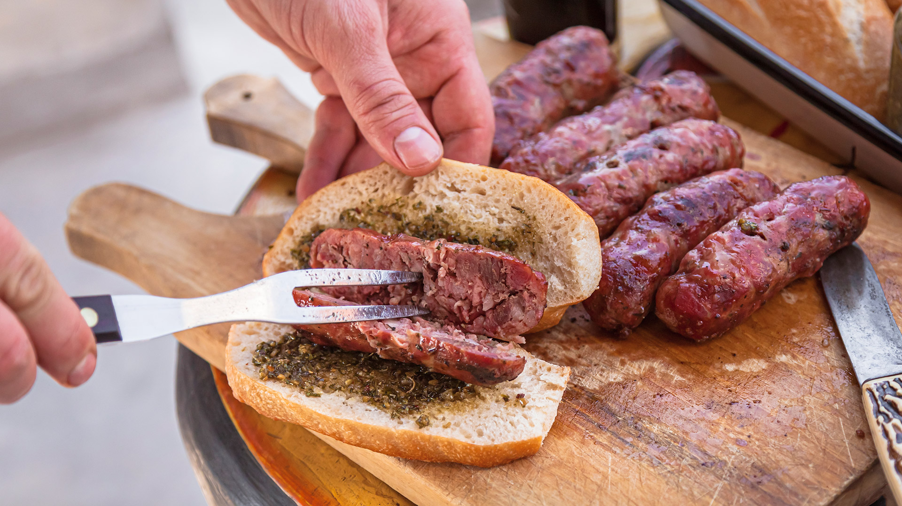

Argentine Barbecue: Choripan

Description
The choripan es un sándwich tradicional del asado argentino formado por
chorizo a la parrilla y pan. Se suele comer en el inicio del asado, a modo de entrada.
Queda muy bien acompañado con chimichurri, salsa criolla o provenzal.
Ingredients
Steps
- Calentar la parrilla con buenas brasas.
- Colocar los chorizos y dejarlos que se cocinen por 20 minutos. Si se desea, se pueden pinchar. Es una decisión a gusto de cada asador.
- Girarlos para que terminen la cocción del otro lado, por otros 20 minutos.
- Chorizo mariposa: se denomina así al chorizo cortado de manera vertical y grillado a la parrilla para que quede bien crocante y cocido.
- Cortar los panes al medio (se pueden calentar) y sumar el chorizo. Servirlo con salsitas o solo.